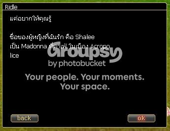

เควสวันไวท์เดย์ (เกือบ) ครบ จ้าาา แหะๆ
50 โพสต์
• หน้า 3 จากทั้งหมด 4 • 1, 2, 3, 4
 โดย ECO » พุธ 12 มี.ค. 2008 12:28 pm
โดย ECO » พุธ 12 มี.ค. 2008 12:28 pm
Lovemelody เขียน:ไอ้เจ้า Magical Marshmallow นี่ทำยังไงเหรอคะ มีใครรู้บ้างงิ
สกิลทำอาหารก็ทำได้ค่ะ หรือไปให้ป้าทำก็ได้
แต่ยังไงๆ ทำแล้ว % ของ Soft Marshmellow>Heart Marshmellow>>>>Magical Marshmellow
teferi เขียน:ขอบคุณสำหรับข้อมูลดี ๆ ค่ะ
ว่าแต่กระเป๋าหลัง ไม่ใช่ว่าเผ่าไหนก็ทำได้ แต่ใส่ได้แค่เผ่า Emil เหมือนตอนเควสวาเลนไทน์เหรอคะ
ทำได้ทุกเผ่าค่ะ เพราะเราก็เอาตัวเผ่านางฟ้าไปทำ
แต่ตัวที่ใส่ได้มีแค่อีมิล
kittiya เขียน:Lovemelody เขียน:ขอบคุณรีบนสำหรับคำตอบค่ะ
เราลองไปทำมาละ เอา 15 ชิ้นไปแลกได้พรมมาอันหนึ่ง T-T"
แต่ใจจริงอยากจะได้ธงแขวนผนังมากกว่า แต่ไม่รู้ว่าต้องเอาไปแลกกี่ชิ้น หรือต้องทำกี่ครั้ง ใครแลกธงได้แล้วมาให้ข้อมูลหน่อยนะคะ
ต้องทำ2ครั้ง ครั้งละ15ใบค่ะ ครั้งแรกจะได้พรม ครั้งที่สองจะได้ธงค่ะ
พอครั้งที่สามเค้าจะไม่ให้แลกแล้วอ่ะ
ปล. ได้Posterมาแล้วจะให้ได้กรอบไปใส่ฟลายอิ้งการ์เด้นทำไงล่ะคะนี่ ได้มาแต่ยังเอาไปแต่งมะได้อ่ะ
เอาไปคุยกับ NPC Vary Drawer ที่เราเอา Poster มาอ่ะค่ะ
แล้วเลือก เก็บ Poster
ก็จะเอาไปแต่งบ้านได้
Marshmellow อะ รอซักพักค่อยไปทำก็ได้ คนเยอะ T_T
อย่าลืมทำกันสองครั้งนะคะ ^^
- ECO
- Dark Warrior
- โพสต์: 276285
- ลงทะเบียนเมื่อ: พุธ 26 ต.ค. 2011 9:31 pm
 โดย ECO » พุธ 12 มี.ค. 2008 12:39 pm
โดย ECO » พุธ 12 มี.ค. 2008 12:39 pm
Rosajang เขียน:แล้วคุณ [b]Npc:Masha ล่ะ??มีไว้ทำไมอ่ะคะ??- -,
แบบว่าไปคุยกี่ทีๆก็มีแต่ร้อง ฮู่ว๐ ๐ ๐ อะไรประมาณนี้นี่แหล่ะ- -
สงสัยอยู่
พอเอาตัวไปคุยกับ Emil มันจะบอกว่า
Masha หายไปไหน??
พอไปคุยกับ Marsha มันก็จะร้อง ฮู่ว๐ ๐ ๐
เดี๋ยวขอไปทดลองอะไรซักอย่างก่อนนะ ><
แงะ จำไม่ได้ว่าเอาตัวไหนเอาชอคโกแลตไปให้อีมิล
ใครที่เอาชอคโกแลตไปให้เมื่อวันวาเลนไทน์แล้วคราวนี้อีมิลเอาโบว์ชมพูกับ Heart Marshmellow มาให้แล้ว
ลองคุยอีกทีให้อีมิลถามว่า Masha ไปไหน
แล้วลองไปคุยกับ Masha หน่อยเถอะค่ะ
ถ้าจำได้ว่าใช้ตัวไหนจะลองไปคุย
แต่ไม่รู้นะจะมีอะไรหรือเปล่า
- ECO
- Dark Warrior
- โพสต์: 276285
- ลงทะเบียนเมื่อ: พุธ 26 ต.ค. 2011 9:31 pm
 โดย ECO » พุธ 12 มี.ค. 2008 1:48 pm
โดย ECO » พุธ 12 มี.ค. 2008 1:48 pm
vanishevil เขียน:teferi เขียน:ขอบคุณสำหรับข้อมูลดี ๆ ค่ะ
ว่าแต่กระเป๋าหลัง ไม่ใช่ว่าเผ่าไหนก็ทำได้ แต่ใส่ได้แค่เผ่า Emil เหมือนตอนเควสวาเลนไทน์เหรอคะ
ทำได้ทุกเผ่าค่ะ เพราะเราก็เอาตัวเผ่านางฟ้าไปทำ
แต่ตัวที่ใส่ได้มีแค่อีมิล
สรุป1ไอดีจะได้กระเป๋า1ใบใช่มั้ย เพราะรอบนี้ไม่เห็นมีบอกเรื่องนี้เลย...
- ECO
- Dark Warrior
- โพสต์: 276285
- ลงทะเบียนเมื่อ: พุธ 26 ต.ค. 2011 9:31 pm
 โดย ECO » พุธ 12 มี.ค. 2008 1:58 pm
โดย ECO » พุธ 12 มี.ค. 2008 1:58 pm
No one เขียน:vanishevil เขียน:teferi เขียน:ขอบคุณสำหรับข้อมูลดี ๆ ค่ะ
ว่าแต่กระเป๋าหลัง ไม่ใช่ว่าเผ่าไหนก็ทำได้ แต่ใส่ได้แค่เผ่า Emil เหมือนตอนเควสวาเลนไทน์เหรอคะ
ทำได้ทุกเผ่าค่ะ เพราะเราก็เอาตัวเผ่านางฟ้าไปทำ
แต่ตัวที่ใส่ได้มีแค่อีมิล
สรุป1ไอดีจะได้กระเป๋า1ใบใช่มั้ย เพราะรอบนี้ไม่เห็นมีบอกเรื่องนี้เลย...
ถูกแล้วค่ะ ได้ไอดีละใบเท่านั้น ของทุกอย่างได้ไอดีละอันค่ะ รวมถึงเควสส่งช็อคฯด้วย
- ECO
- Dark Warrior
- โพสต์: 276285
- ลงทะเบียนเมื่อ: พุธ 26 ต.ค. 2011 9:31 pm
 โดย ECO » พุธ 12 มี.ค. 2008 9:44 pm
โดย ECO » พุธ 12 มี.ค. 2008 9:44 pm
ฟู่ ทำเควสเสร็จเกือบหมดละ ก่อนหน้านี้เคยสงสัยว่า...แล้วชายคนรักของมาดอนน่าอยู่ที่ไหน ในที่สุดผมก็ได้คำตอบ...
สรุปพี่แกความจำเสื่อมนี่เอง แล้วชื่อของnpcนี่น่าจะเป็นประมาณผู้ชายที่ไม่มีที่มาที่ไป หรือเป็นคนปริศนา(?)มากกว่าแฮะ- -...
เควสส่งมาร์ชเมลโล่ผมเล่นตุกติกนิดหน่อย คือเอาตัวเลเวล10ไปทำเควสหมดเลย มีอยู่2ตัว ประหยัดมาร์ชเมลโล่ไปได้เยอะ จะทำต่อเรื่อยๆหาบัตรไปแลกพรมกับธงให้เพื่อน :lol: ...


สรุปพี่แกความจำเสื่อมนี่เอง แล้วชื่อของnpcนี่น่าจะเป็นประมาณผู้ชายที่ไม่มีที่มาที่ไป หรือเป็นคนปริศนา(?)มากกว่าแฮะ- -...
เควสส่งมาร์ชเมลโล่ผมเล่นตุกติกนิดหน่อย คือเอาตัวเลเวล10ไปทำเควสหมดเลย มีอยู่2ตัว ประหยัดมาร์ชเมลโล่ไปได้เยอะ จะทำต่อเรื่อยๆหาบัตรไปแลกพรมกับธงให้เพื่อน :lol: ...
- ECO
- Dark Warrior
- โพสต์: 276285
- ลงทะเบียนเมื่อ: พุธ 26 ต.ค. 2011 9:31 pm
 โดย ECO » พุธ 12 มี.ค. 2008 10:31 pm
โดย ECO » พุธ 12 มี.ค. 2008 10:31 pm
No one เขียน:ฟู่ ทำเควสเสร็จเกือบหมดละ ก่อนหน้านี้เคยสงสัยว่า...แล้วชายคนรักของมาดอนน่าอยู่ที่ไหน ในที่สุดผมก็ได้คำตอบ...
สรุปพี่แกความจำเสื่อมนี่เอง แล้วชื่อของnpcนี่น่าจะเป็นประมาณผู้ชายที่ไม่มีที่มาที่ไป หรือเป็นคนปริศนา(?)มากกว่าแฮะ- -...
เควสส่งมาร์ชเมลโล่ผมเล่นตุกติกนิดหน่อย คือเอาตัวเลเวล10ไปทำเควสหมดเลย มีอยู่2ตัว ประหยัดมาร์ชเมลโล่ไปได้เยอะ จะทำต่อเรื่อยๆหาบัตรไปแลกพรมกับธงให้เพื่อน :lol: ...
อ๋อออ คนนี้ที่ตอนนั้นมาดอนน่าใฝ่ฝันหา จนเอากุหลาบให้เรามาช่ายมะ
โอ้ว
มะหล่อเลย
อิอิ
- ECO
- Dark Warrior
- โพสต์: 276285
- ลงทะเบียนเมื่อ: พุธ 26 ต.ค. 2011 9:31 pm
 โดย ECO » พฤหัสฯ. 13 มี.ค. 2008 8:23 am
โดย ECO » พฤหัสฯ. 13 มี.ค. 2008 8:23 am
ตอนทำเควสกระเป๋า เอาตัวที่ไม่ได้ทำเควสมาดอนน่าไปทำ ไม่แน่ใจว่าจะมีเนื้อเรื่องตามต่อท้ายหรือเปล่า อย่างเช่น เราไปบอกข่าวกับมาดอนน่าว่าเจอตัวที่รักเธอแล้วนะ หรือไปเยาะเย้ยDegaว่า เฮ้ย เอ็งอกหักแล้ว 555...
เดี๋ยววันนี้จะลองเอาตัวในไอดีที่ทำเควสมาดอนน่าไปลองดู ถ้ามีส่วนที่ว่านี่จริง เควสจะสมบูรณ์ขึ้นเยอะ 8) ...
แล้วอีเวนท์ไวท์เดย์นี่ขอชมว่า ทีมงานแปลสคริปต์ได้ดีขึ้น อ่านรู้เรื่อง ไม่มั่วรูปประโยคและภาษา ที่สำคัญ...ตัวละครไม่แปลงเพศเหมือนกับที่เจอในเควสวาเลนไทน์ มาดอนน่าพูดลงท้ายว่า เชิญคร๊าบ~
เดี๋ยววันนี้จะลองเอาตัวในไอดีที่ทำเควสมาดอนน่าไปลองดู ถ้ามีส่วนที่ว่านี่จริง เควสจะสมบูรณ์ขึ้นเยอะ 8) ...
แล้วอีเวนท์ไวท์เดย์นี่ขอชมว่า ทีมงานแปลสคริปต์ได้ดีขึ้น อ่านรู้เรื่อง ไม่มั่วรูปประโยคและภาษา ที่สำคัญ...ตัวละครไม่แปลงเพศเหมือนกับที่เจอในเควสวาเลนไทน์ มาดอนน่าพูดลงท้ายว่า เชิญคร๊าบ~
- ECO
- Dark Warrior
- โพสต์: 276285
- ลงทะเบียนเมื่อ: พุธ 26 ต.ค. 2011 9:31 pm
50 โพสต์
• หน้า 3 จากทั้งหมด 4 • 1, 2, 3, 4
ผู้ใช้งานขณะนี้
กำลังดูบอร์ดนี้: ไม่มีสมาชิก และ บุคคลทั่วไป 2 ท่าน